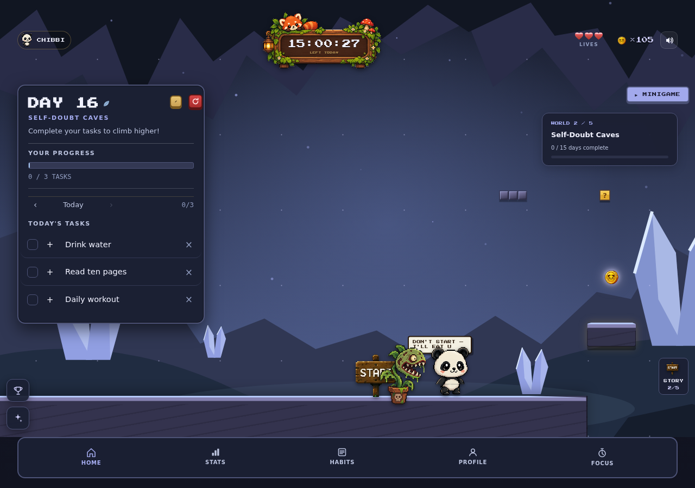
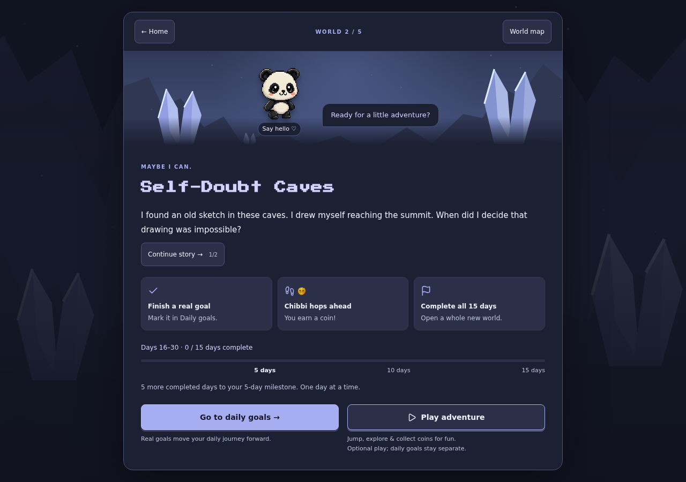
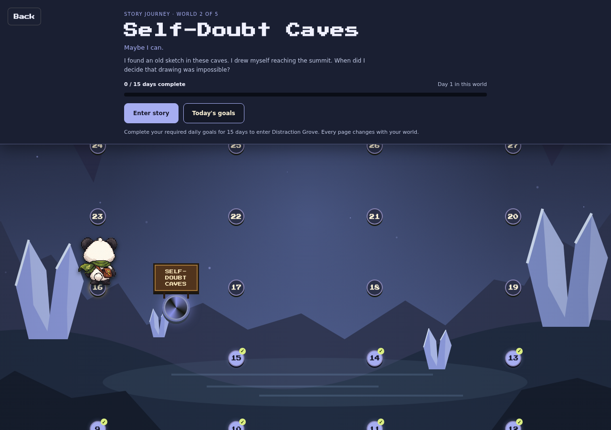

How the world carries across the app
Crystal scenery and lavender colors connect your goals, story, and maps.

Scenery, ground, goal cards, and navigation use the daily world’s colors.

The story card and companion scene match the selected chapter.

The whole daily map uses the active daily world’s backdrop.

Numbered stones match the environment. A portal appears after all 15 missions.